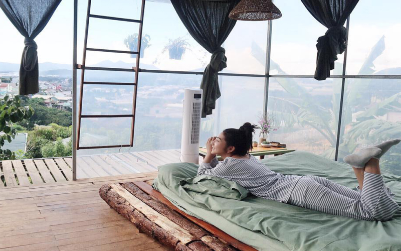

Resort được biết đến là một trong những lựa chọn hàng đầu cho những du khách thích nghỉ dưỡng vì đa số resort tại Đà Lạt tọa lạc tại những khu vực xa trung tâm với những cảnh quan thơ mộng và bầu không khí trong lành để khách đến đây có thể tận hưởng được hết cái không khí mát lành, yên ả tại Đà Lạt.
Resort được biết đến là một trong những lựa chọn hàng đầu cho những du khách thích nghỉ dưỡng vì đa số resort tại Đà Lạt tọa lạc tại những khu vực xa trung tâm với những cảnh quan thơ mộng và bầu không khí trong lành để khách đến đây có thể tận hưởng được hết cái không khí mát lành, yên ả tại Đà Lạt.
Villa là một loại hình khác hẳn với các hình thức còn lại, điều đặc biệt ở villa là được xây dựng biệt lập với những khu vực khác giúp du khách có sự thoải mái, không gian riêng tư nhất định và để du khách có được những phút giây thư giãn một cách tuyệt đối.
Đến với villa bán sẽ có được một không gian hoàn toàn riêng tư có thể thực hiện được những hoạt động mà mình yêu thích. Những tiêu chuẩn cơ bản của môt căn villa thường có như phòng khách, nhiều phòng ngủ, sân vườn, bếp và hồ bới với thiết kế sang trọng và gần gũi với thiên nhiên. Với những đoàn bạn bè hay gia đình khi đến Đà Lạt thì sẽ có xu hướng chọn villa là hình thức để lưu trú vì nơi đây có thể tạo nên một không gian gần gũi, ấm cúng cho các thành viên trong đoàn. Đặc biệt, ở villa có không gian rộng lớn thích hợp để mở các buổi tiệc ấm cúng, tụ họp đầy ý nghĩa và kỷ niệm.
Homestay được biết đến là một loại hình lưu trú mới có mặt gần đây nhằm hướng đến sự gắn kết giữa chủ nhà với khách du lịch, đồng thười homestay cũng là hình thức mà khách du lịch thường lựa chọn khi đến Đà Lạt vì sự gần gũi, thoải mái và có không khí của một gia đình.
Các homestay ở thành phố ngàn hoa thường có lối thiết kế cổ điển gắn liền với thiên nhiên, đặc biệt chuyên khai thác những góc sống ảo độc đáo để có thể chiều lòng những tín đồ đam mê check in. Đồng thời, điều làm nên sự khác biệt của homestay đó chính là sự trải nghiệm các hoạt động cùng với chủ nhà, biết được phong cách sống của người dân địa phương đầy thú vị.
Đây được xem là một hình thức phổ biến, có từ lâu đời thường được nhiều người lựa chọn. Và đây được xem là một trong những loại hình lưu trú chuyên phục vụ các đoàn lớn và những đối tượng muốn tận hưởng sự tiện nghi.
Khách sạn tại Đà Lạt thường tọa lạc tại vị trí tủng tâm thành phố nên sẽ thuận tiện cho việc di chuyển giữa các điểm đến, du khách có thể tự do tham quan và sử dụng các dịch vụ lân cận thành phố Đà Lạt mà không cần mất quá nhiều thời gian di chuyển.
Đây được xem là một hình thức trải nghiệm mơi khi đặt chân đế Đà Lạt. Với hình thức lưu trú này thường phù hợp với các bạn trẻ muốn trải nghiệm những điều mới lạ, tận hưởng những cái mộc mạc và gẫn gũi nhất của khí trời Đà Lạt.
Với những chiếc lều được dựng lên xung quanh một nhóm lửa ấm áp, cùng nhua nướng thịt và trò chuyện, cùng nhìn ngắm khung cảnh mộc nhất của Đà Lạt, tận hưởng khí trời thiên nhiên của thành phố.

> An Giang
> Bà Rịa - Vũng Tàu
> Bắc Giang
> Bắc Kạn
> Bạc Liêu
> Bắc Ninh
> Bến Tre
> Bình Định
> Bình Duong
> Bình Phước
> Bình Thuận
> Cà Mau
> Cần Thơ
> Cao Bằng
> Đà Nẵng
> Đắk Lắk
> Đắk Nông
> Điện Biên
> Đồng Nai
> Đồng Tháp
> Gia Lai
> Hà Giang
> Hà Nam
> Hà Nội
> Hà Tĩnh
> Hải Dương
> Hải Phòng
> Hậu Giang
> Hòa Bình
> Hưng Yên
> Khánh Hòa
> Kiên Giang
> Kon Tum
> Lai Châu
> Lâm Đồng
> Lạng Sơn
> Lào Cau
> Long An
> Nam Định
> Nghệ An
> Ninh Bình
> Phú Thọ
> Phú Yên
> Quảng Bình
> Quảng Nam
> Quảng Ngãi
> Quảng Ninh
> Quảng Trị
> Sóc Trăng
> Sơn La
> Thái Bình
> Thái Nguyên
> Thanh Hóa
> Thừa Thiên Huế
> Tiền Giang
> Tp. Hồ Chí Minh
> Trà VInh
> Tuyên Quang
> Vĩnh Long
> Vĩnh Phúc
> Yên Bái